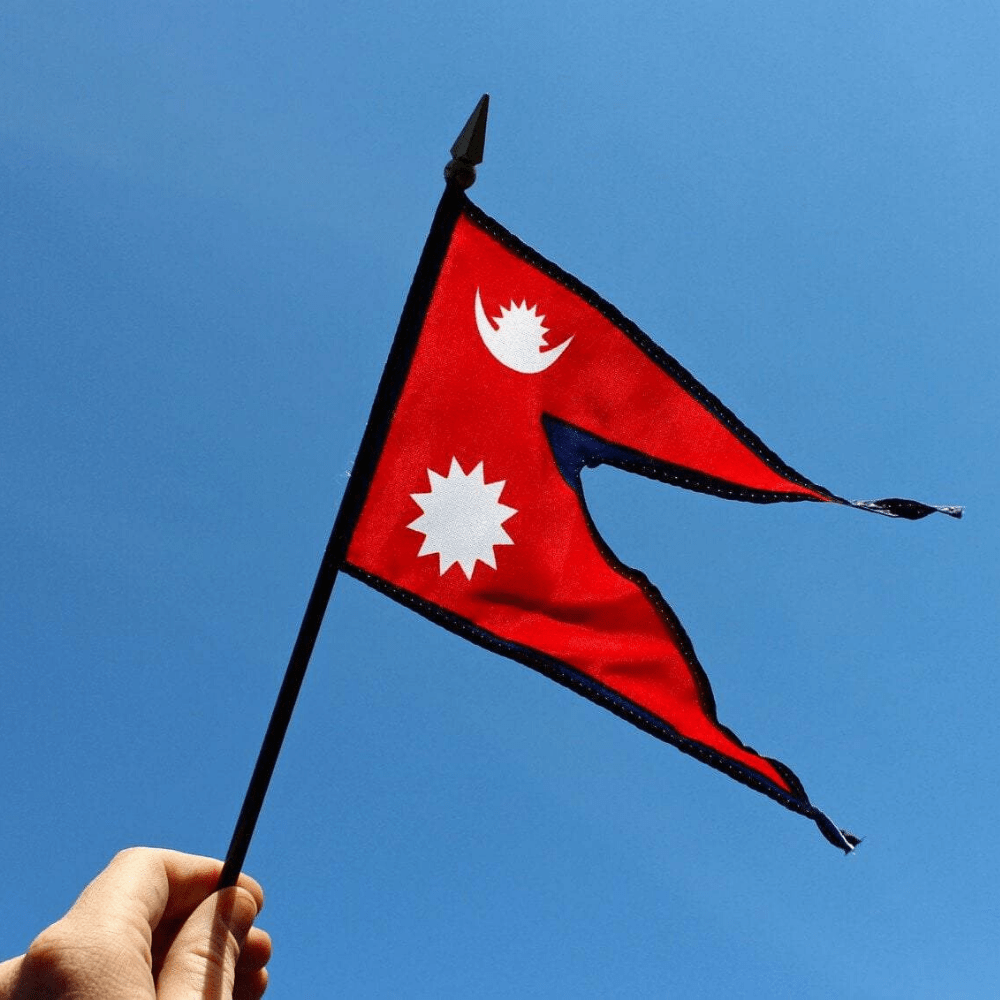
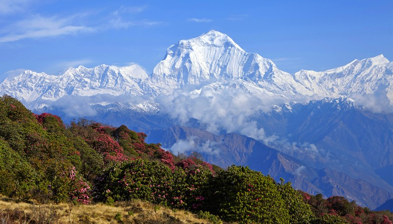
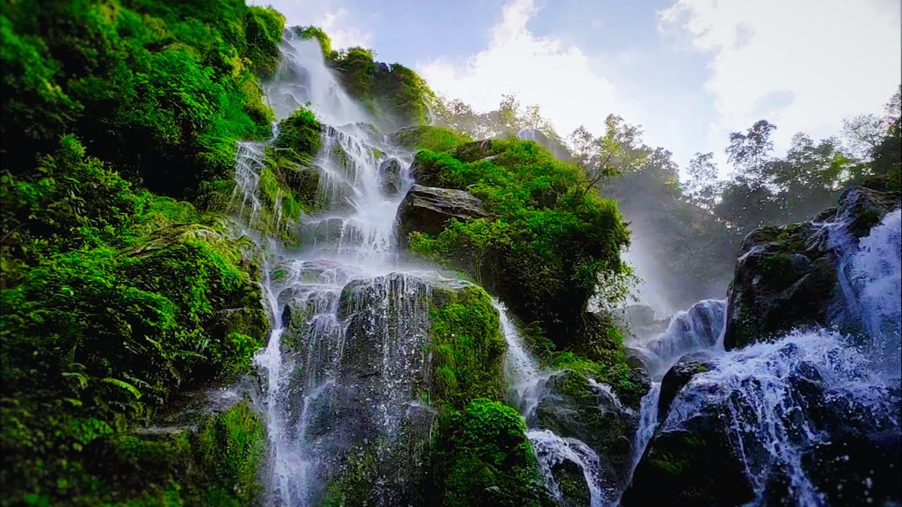
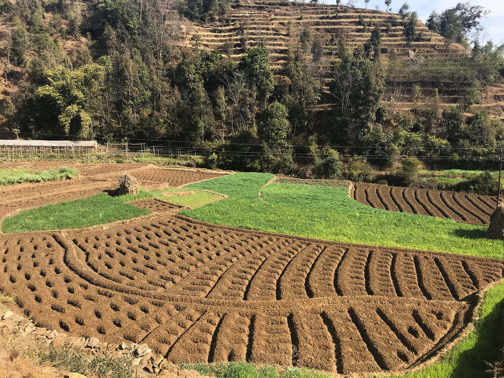
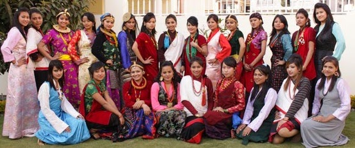

If there is a country’s flag that stands out among all other countries it is the flag of Nepal. Our flag is very unique and cannot be compared to other countries’ flags due to its shape. It also has a hidden meaning behind it which represents the country’s peace-loving and friendly nature, bravery, and immortal history.
My country Nepal is situated between two countries, India and China. Although it is sandwiched between international powers, conflicts have not happened between any, and peace remains. Nepal is a country of various castes and cultures. In other words, it is like a beautiful garden of flowers with people of different
ethnicities and backgrounds.
My country Nepal is not only unique for its flag but also its geographical terrain, the variety of castes and cultures you can find, and the rich history of it. It is the land of various great places and important figures that people know far and wide. The temperature here spans from cool to hot and is a heaven for residing in.

There are about 126 castes in Nepal each with its own rich history and culture which makes Nepal a rich place for culture. Some dating back to the millenniums. Not only that, our country is very rich in its geographical terrain. From the lowest point of just 70 Meters from sea level to the world’s highest peak Mt. Everest (8848.86 meters), we have temperature scales that vary from place to place. It is divided into three regions, Terai, Hilly, and Himalayas each according to their altitude and geographical differences.
Himalayan regions have high and mighty Himalayas that are breathtaking to look at. Out of the world’s top 10 highest peaks, 8 of them fall in my country. It is already a great pride to have come from such a country. The diverse flora and fauna, beautiful landscapes, lush and green jungles, historical and religious places in Nepal are enough to gather the attention of foreigners and locals too. People from all over the world pay thousands of dollars just to see our country’s snow-capped mountains, rivers, cliffs, waterfalls, other beautiful landscapes, the rich flora and fauna, and sites of great religious and historical importance. It just doesn’t end there.

Our country ranks in the top 5 for the richest in water resources. With just a small country with an area of 1,47,181 sq kilometers, it has the potential to fuel hydropower worth 2% of the entire world. It may look small in number but taking our country’s small area in context, it is a potential incomparable to all. The Terai region holds fertile land and smooth flowing waters that are excellent for farming and cultivating.

Nepal is also known as an agricultural country where 60% of the people here follow agriculture as their work. Our country also has huge historical importance. Gautama Buddha the founder and preacher of Buddhism which is practiced worldwide was also born in Nepal. Buddhism is known to preach peace and non-violence and to love everyone. King Janak is also an important figure who holds great importance to communities in Nepal.
Other personalities include Bhrikuti, Araniko, etc. Our country is also known for its bravery. Our country never has to celebrate Independence day as we were never under the rule of any other. We stood and fought against the Britans and other Mongol countries. Brave Gorkhalis were united after a long struggle and fought their way to preserve their country. The courage and bravery of Nepali people are also know world wide. Many brave Gorkhalis went to fight under countries in world wars and won various colors and medals. This brought our country so much respect that we even enjoy it for granted to date.

Although our country’s history, culture, terrains, and achievements make anyone feel proud, the power struggle for the politicians, previous kings, and presidents have made the country weak and fall in the developing country category. Our rich natural resources have not been utilized and we have fallen way behind. Corruption is widely prevalent in our country and the loans we have taken from other countries are in a large number. The amount of food and other materialistic consumption has made Nepal import more and export less.
Our country is poor but the people here are rich. This is because of the corruption and the illegal working/trading that has been done. The government has not made significant progress and the people aren’t responsible. Although I feel proud to be A Nepali, the condition of my country makes me feel bad. People should feel responsible and carry out their duties and not just complain about the government.
The government too should implement proper policies and rules and enforce them accordingly. Utilization of our natural resources should be done in an effective way and social evils such as discrimination according to castes and genders, other superstitions should be slowly removed. Centralized development should stop and we should control the people moving out to other countries with their skills that are wasted abroad. This way we can slowly develop our country.